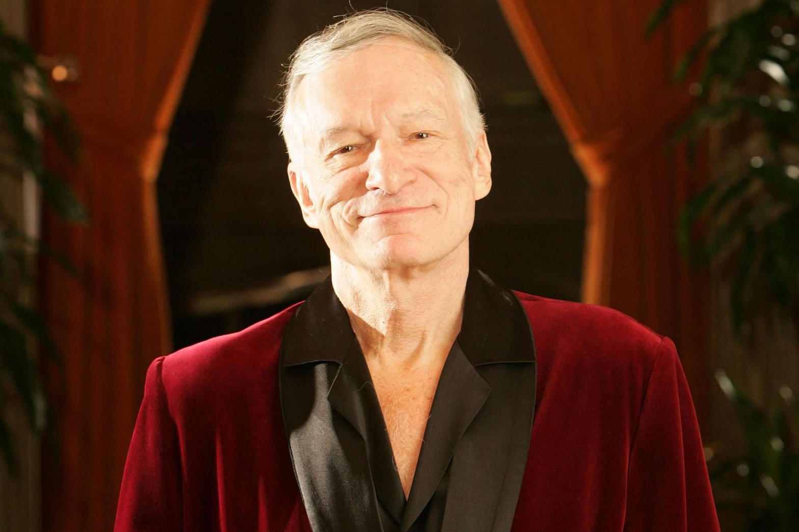
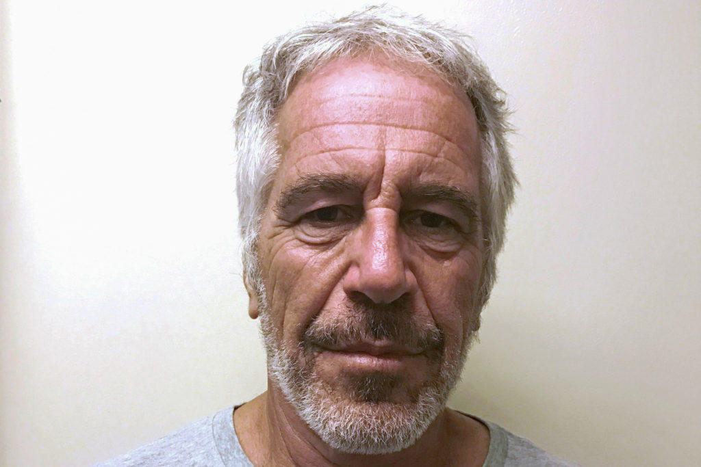
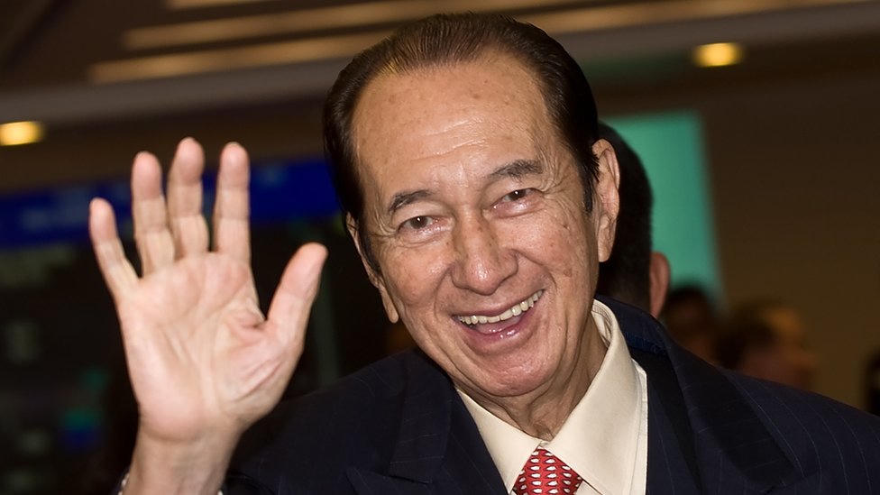

The claim circulating online is largely correct. Court documents in an ongoing federal lawsuit filed by dozens of Jeffrey Epstein’s survivors against the United States state that Hugh Hefner called the FBI multiple times in 2005 after Playboy Playmate Audra Lynn Christiansen (Miss October 2003) told him she had been raped by Epstein and trafficked for roughly a decade.

What the filings say
According to the amended complaint in the Southern District of Florida, Christiansen was introduced to Epstein by her agents shortly after her 2003 centerfold appearance. The documents state that soon after meeting him she was “naked and raped by Epstein” and then “trafficked for 10 years.” She also alleged she was trafficked to Macau casino billionaire Stanley Ho, who died in 2020.
In 2005, while living at the Playboy Mansion, the then-23-year-old asked Hefner to contact the FBI. She believed his status and connections would force the agency to take the report seriously. The complaint states: “Mr. Hefner called the FBI multiple times on behalf of Ms. Christiansen to report Jeffrey Epstein.”
The same filings assert that for about fifteen years the FBI did not investigate the tips or follow up on her allegations. Christiansen was contacted by the bureau in October 2020—more than a year after Epstein’s death in federal custody.

Necessary corrections and context
- Source of the claim: The details come from an amended complaint in a civil lawsuit brought by Epstein survivors against the United States, not from newly unsealed criminal investigative files. Miami Herald investigative reporter Julie K. Brown first highlighted the Hefner tip on her Substack in August 2026; major outlets then reported it.
- Corroboration of Hefner’s calls: The 2005 reports rest on Christiansen’s account as set out in the lawsuit. Public reporting has not identified contemporaneous FBI records confirming the calls themselves.
- Plaintiff count: Coverage varies between 32 and 34 survivors named in the action.
- Age and status: Christiansen was an adult (born 1980) when she met Epstein. The lawsuit frames the FBI’s alleged failure in the broader context of tips involving child sexual abuse and trafficking that the bureau is said to have mishandled for years.
- Hefner’s own record: Hefner faced separate public allegations of sexual misconduct at the Playboy Mansion; those claims are not part of this particular lawsuit.
The larger pattern
The Christiansen/Hefner tip is one piece of a broader accusation in the lawsuit: that the FBI received credible reports about Epstein’s abuse as early as 1996 and repeatedly failed to act, creating foreseeable risk to later victims. The government has moved to dismiss the case, arguing among other things that investigative decisions are discretionary and that the claims are time-barred.
Former FBI special agent Jennifer Coffindaffer told NewsNation the 15-year delay had “no excuse,” even while noting the post-9/11 priority on counterterrorism.

Bottom line
The core factual claims in the circulating post match the court documents as reported: Hefner did, according to the lawsuit, report Epstein on behalf of Christiansen in 2005; the documents state she was raped and trafficked for about ten years, including to Stanley Ho; and the FBI’s first documented contact with her on the matter came 15 years later. The primary caveat is that the Hefner tip itself is currently supported by the survivor’s account inside the civil complaint rather than by independently released FBI call records.